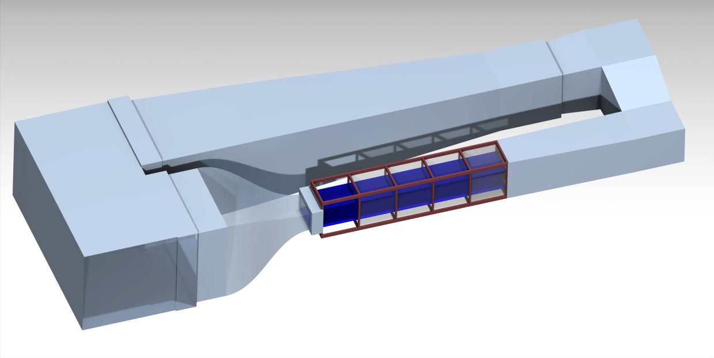
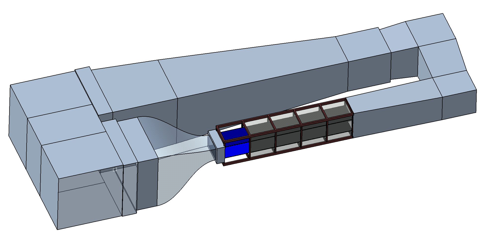
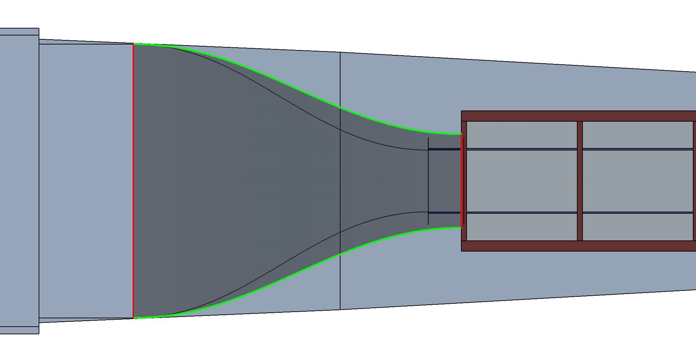

Requirements and design basis
The tunnel, the operating conditions, the models and the loads the balance must measure.
The wind tunnel
Closed-return tunnel with a 30 in long test section, 26.25 in wide x 11.25 in high. The model's balance moment centre (BMC) sits 17.0 in aft of the test-section entrance (13.0 in ahead of the exit). The positioning mechanism stands in the wider bay downstream of the test section (assumed 36 in wide x 22.7 in high from the tunnel CAD - to be confirmed).






Flow conditions
Dynamic pressure vs airspeed
| Speed | q (psf) | q (inH₂O) | Re (3.5 in chord) | Lift at CL 1.3 | Min drag (CD 0.012) | ΔCD = 0.001 |
|---|---|---|---|---|---|---|
| 70 mph | 12.5 | 2.41 | 1.9 x 10⁵ | 7.1 lbf | 0.066 lbf | 0.0055 lbf |
| 85 mph | 18.5 | 3.55 | 2.3 x 10⁵ | 10.5 lbf | 0.097 lbf | 0.0081 lbf |
| 100 mph | 25.6 | 4.91 | 2.7 x 10⁵ | 14.5 lbf | 0.134 lbf | 0.0112 lbf |
Reference model: 18 in span x 3.5 in chord wing (0.44 ft²) on a 2.25 in pod. Low Reynolds number: trip strips or low-Re airfoils recommended.
Design (full-scale) loads
| Component | Full scale | Basis |
|---|---|---|
| Normal force N (lift) | 25 lbf | CL 1.3 at 100 mph = 14.5 lbf, x1.7 for buffet, model weight and handling |
| Axial force A (drag) | 4 lbf | post-stall wing ~3.4 lbf; bluff printed bodies ~1.1 lbf |
| Pitching moment m | 15 in-lbf | Cm ~0.1 + 0.5 in quarter-chord placement error |
| Side force Y | 8 lbf | sideslip up to ~15-25° (assumed; to confirm) |
| Yawing moment n | 10 in-lbf | assumed; to confirm |
| Rolling moment l | 30 in-lbf | one wing panel stalled (~7 lbf at 4.5 in) |
Accuracy expectations
NASA Langley's own balances reach 0.06-0.17 % of full scale (2σ). A student-built balance should plan on ~0.3 % FS: lift ±0.08 lbf, pitching moment ±0.045 in-lbf, drag ±0.012 lbf - about ΔCD 0.002 (22 counts) at 70 mph and 0.001 (11 counts) at 100 mph for the reference wing. That is fine for lift curves, stall, polars and model comparisons; minimum-drag values at 70 mph carry roughly ±15-20 %, so drag-critical runs should be made at 100 mph.
Motion requirements
| Axis | Range | Mechanism | Speed |
|---|---|---|---|
| Roll | ±90° | Spindle at the sting root, NEMA 23 + 50:1 worm | ±90° in ~10 s |
| Pitch | -6° to +20° | Arc sector centred on the BMC, NEMA 17 + 40:1 worm + curved rack | up to 2°/s |
| Yaw | ±15° | Carriage on curved floor rails centred under the BMC (option B: wings-level sideslip) | up to 3°/s |